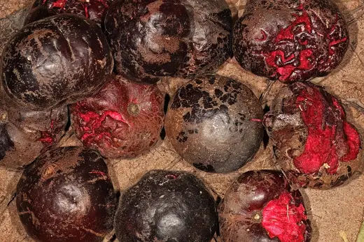

Burdekin plum
Burdekin plum is a wild fruit you can forage from April to August in Tropical north and Subtropical east coast. Large rainforest and street tree of Queensland with glossy compound leaves; flattened purple-black plums with a big woody stone.

When is burdekin plum in season in Australia?
Burdekin plum is usually in season April to August. Timing shifts with weather, latitude and altitude.
Where does burdekin plum grow in Australia?
Burdekin plum grows in New South Wales, Northern Territory, Queensland, Western Australia. Regions: Tropical north, Subtropical east coast.
How do you recognise burdekin plum?
Large rainforest and street tree of Queensland with glossy compound leaves; flattened purple-black plums with a big woody stone.
How do you harvest burdekin plum?
Pick only fully ripe fruit that comes away easily, into a shallow container so it doesn't crush. Leave plenty on the plant for birds and wildlife.
How do you eat burdekin plum?
Ripened off the tree until soft, then eaten fresh or made into jam and chutney.
How do you store burdekin plum?
Jam or freeze pulp.
What is burdekin plum good for?
Vitamin C.
What can you cook with burdekin plum?
- Burdekin plum jam: Softened Burdekin plums cooked into a deep purple jam.